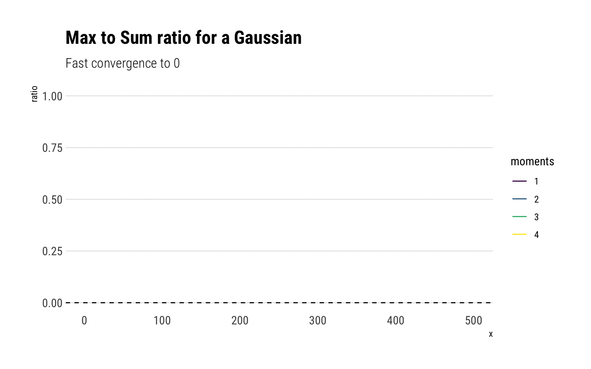
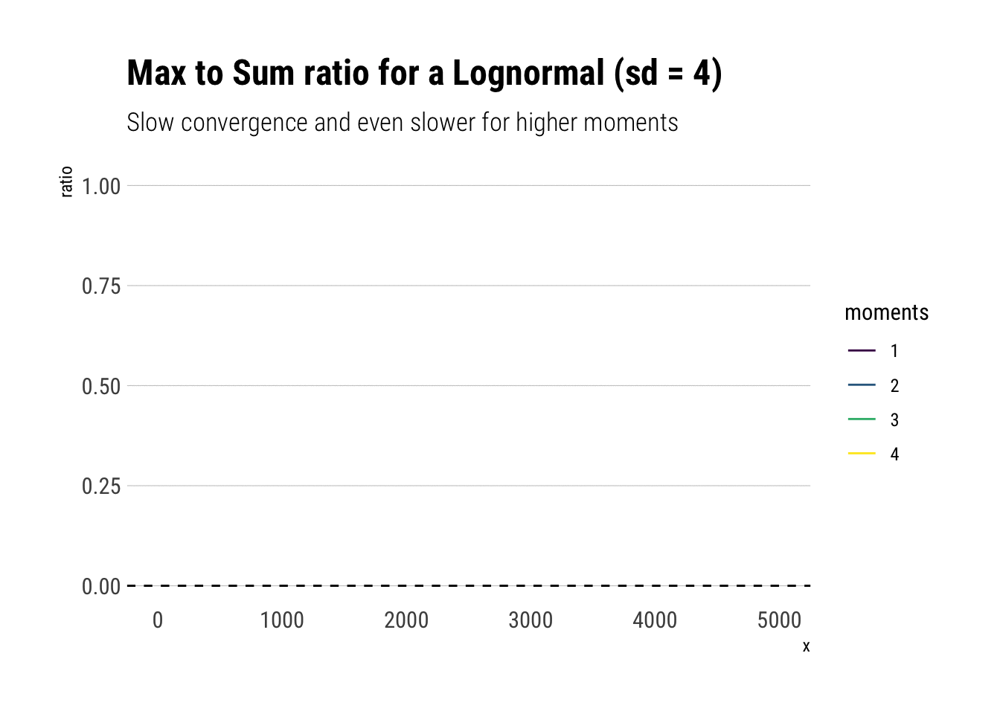
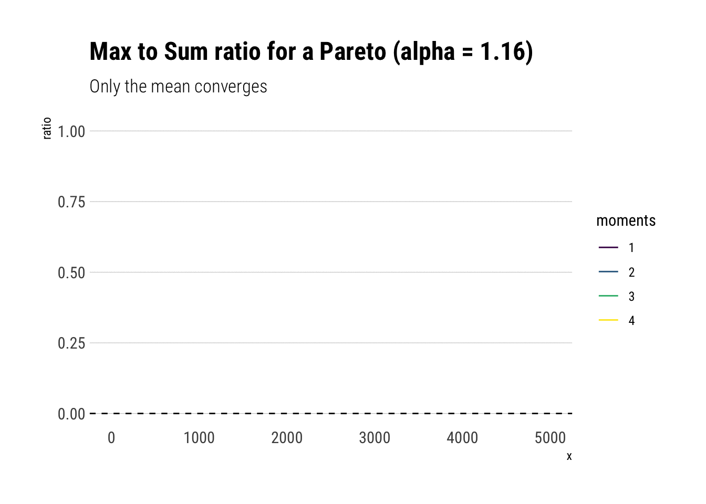
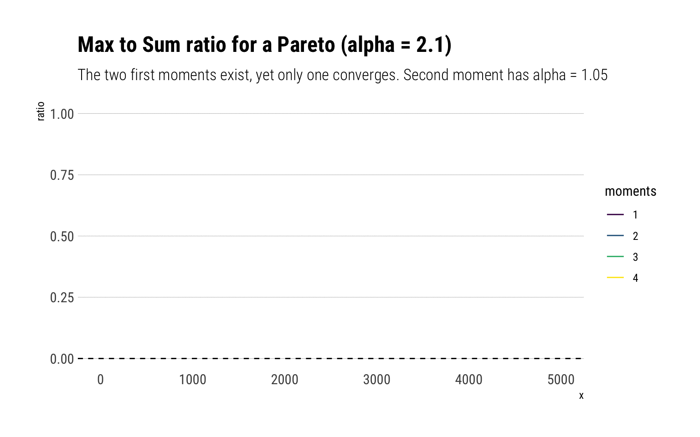

library(ggtails)I have recently been exploring Nassim Taleb’s latest technical book: Statistical Consequences of Fat Tails. In it, we have seen how the Law of Large Numbers for different estimators simply does not work fast enough (in Extremistan) to be used in real life. For example, we have seen how the distribution of the sample mean, PCA, sample correlation and \(R^2\) turn into pure noise when we are dealing with fat-tails. Also, we have seen how the slow convergence of the CLT for fat-tails: thus making the normal approximation for most samples sizes an unreliable on.
In this post, I’ll explore the slow workings of the Law of Large numbers for higher moments. Similar to what we did for the sample mean, we will check whether adding observations reduce the variability of our estimate or whether it causes occasional jumps that lead us to believe that large sub-samples will produce different averages, indicating that the theoretical moment does not exist. This problem will only be worsened with higher moments: higher moments are convex transforms of the original random variable. Thus, they are even more fatter than our original variable and our estimates will be more likely to suffer from large discontinuous jumps that will derail convergence.
The math
A consequence of the Law of Large Numbers (LLN) is the following:
\[ E[X^p] < \infty \iff R_n^p = \dfrac{max(X_1^p, \dots, X_n^p)}{\sum_{i=1}^n X_i^p} \to 0, \ \text{as} \ n \to \infty\] That is, the theoretical moment \(p\) exists if and only if the ratio of the partial max to the partial sum converges to \(0\). Of course, with any sample at hand, the fact that the ratio has yet to converge isn’t proof that it will never converge. It may be that we just simply haven’t enough data. However, it is proof that we are dealing with fat-tails, as these are the variables for which we observe the slow convergence of the Law of Large Numbers.
Monte Carlo simulations
As always, I’ll explore the meaning of this convergence with some Monte-Carlo experiments. Note, however, that I’ll abstract the computation of the ratio itself to ggtails, the package that I’ve created to plot the fat-tail-specific diagnostics.
Fast-Convergence: Mediocristan
gaussian <- rnorm(500)
data.frame(gaussian) %>%
ggplot(aes(sample = gaussian)) +
stat_max_sum_ratio_plot(p = 4) +
geom_hline(aes(yintercept = 0),
linetype = 2) +
transition_reveal(stat(x)) +
scale_color_viridis_d() +
labs(title = "Max to Sum ratio for a Gaussian",
subtitle = "Fast convergence to 0")
For a Gaussian, all the moments exist and therefore the ratio of the max-to-sum for all the moments converge to \(0\). Notice that after 50 observations, the ratio stabilizes and adding more observations always results in the ratio converging to 0. However, note that just as we saw with the CLT, higher moments take longer to converge. Notice that this is not a feature of the sample, but a feature of the fast convergence of the LLN for the Gaussian. To see this, we can check the convergence for 10 different gaussian samples:
rerun(10, rnorm(500)) %>% bind_cols() %>%
mutate(sim =1:500) %>%
pivot_longer(-sim, names_to = "simulation") %>%
mutate(simulation = str_extract(simulation, "\\d+")) %>%
ggplot(aes(sample = value)) +
stat_max_sum_ratio_plot(p = 4) +
geom_hline(aes(yintercept = 0),
linetype = 2) +
transition_reveal(stat(x)) +
facet_wrap(~simulation, nrow = 4) +
scale_color_viridis_d() +
labs(title = "Max to Sum ratio for a Gaussian",
subtitle = "Fast convergence to 0")
Lognormal
Notice that all the moments also exist for a lognormal. However, the convergence is much slower: the extreme events observations cause sudden jumps that derail the convergence. Much more data is needed. Here we have an order of magnitude more.
lognormal <- rlnorm(5000, sd = 4)
data.frame(lognormal) %>%
ggplot(aes(sample = lognormal)) +
stat_max_sum_ratio_plot(p = 4) +
geom_hline(aes(yintercept = 0),
linetype = 2) +
transition_reveal(stat(x)) +
scale_color_viridis_d() +
labs(title = "Max to Sum ratio for a Lognormal (sd = 4)",
subtitle = "Slow convergence and even slower for higher moments")
Crucially, the higher moments are even more fat-tailed. Thus, they are much more susceptible to discontinuous jumps and therefore have slower convergence.
Notice that this behavior is not a property of our specific sample but of the distribution itself.
rerun(10, rlnorm(500, sd = 4)) %>% bind_cols() %>%
mutate(sim =1:500) %>%
pivot_longer(-sim, names_to = "simulation") %>%
mutate(simulation = str_extract(simulation, "\\d+")) %>%
ggplot(aes(sample = value)) +
stat_max_sum_ratio_plot(p = 4) +
geom_hline(aes(yintercept = 0),
linetype = 2) +
transition_reveal(stat(x)) +
facet_wrap(~simulation) +
scale_color_viridis_d() +
labs(title = "Max to Sum ratio for a Lognormal",
subtitle = "Slow convergence for higher moments")
Pareto Distribution
Now it’s time to analyze a distribution that has no finite theoretical moments. For example, a Pareto with tail exponent \(\alpha = 1.16\), equivalent to the 80/20 rule, only has finite mean. All other higher moments are infinite. If you want an intuitive explanation of the tail exponent, check this other blogpost
alpha <- 1.16
rpareto <- function(n) {
(1/runif(n)^(1/alpha)) # inverse transform sampling
}
pareto <- rpareto(5000)
data.frame(pareto) %>%
ggplot(aes(sample = pareto)) +
stat_max_sum_ratio_plot(p = 4) +
geom_hline(aes(yintercept = 0),
linetype = 2) +
transition_reveal(stat(x)) +
scale_color_viridis_d() +
labs(title = "Max to Sum ratio for a Pareto (alpha = 1.16)",
subtitle = "Only the mean converges")
Compare it for a Pareto with $ = 2.32$:
alpha <- 2.1
rpareto <- function(n) {
(1/runif(n)^(1/alpha)) # inverse transform sampling
}
pareto <- rpareto(5000)
data.frame(pareto) %>%
ggplot(aes(sample = pareto)) +
stat_max_sum_ratio_plot(p = 4) +
geom_hline(aes(yintercept = 0),
linetype = 2) +
transition_reveal(stat(x)) +
scale_color_viridis_d() +
labs(title = "Max to Sum ratio for a Pareto (alpha = 2.1)",
subtitle = "The two first moments exist, yet only one converges. Second moment has alpha = 1.05")
Indeed, the first two moments exist and should both converge to zero. However, the second moment has fatter tails and thus takes longer to converge.
Conclusion
The LLN converges very slowly for fat-tailed variables. For higher moments, the problem is compounded: their convergence is even slower.